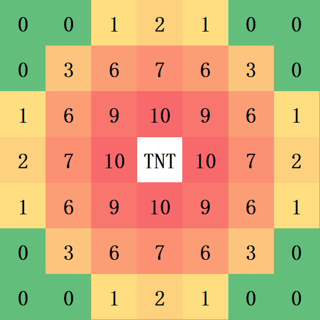

| 装备类型 | 图标 | 剑的攻击 | 盔甲防御 |
|---|---|---|---|
| 钻石 | - | ||
| 金 | - | ||
| 铁 | - | ||
| 无 | 无 | 无 |
| 道具名称 | 图标 | 作用 |
|---|---|---|
| TNT | 使附近的敌方棋子受到伤害，炸毁方块。  （数字代表的个数。） | |
| 治疗药水 | 立即回满血量。 | |
| 迅捷药水 | 一定时间内可以一次走三格。 | |
| 力量药水 | 一定时间内攻击增加。 | |
| 冰 | 周围八格敌方棋子冰冻一定时间。冰可以被TNT炸毁。 | |
| 末影珍珠 | 使用后可以瞬移到任意空格。 | |
| 骨头 | 不能自然生成，只能通过击败“贾”获得。 每一根骨头可以使该棋子免疫一次伤害（免疫后这根骨头就没了）。 若使用骨头，则棋子会向随机方向投掷骨头，对敌方棋子造成 的伤害。 |
| 方块名称 | 图标 | 可逾越? | 可摧毁之的工具 |
|---|---|---|---|
| 石墙 | 仅马 | ||
| 砖墙 | 仅马 |